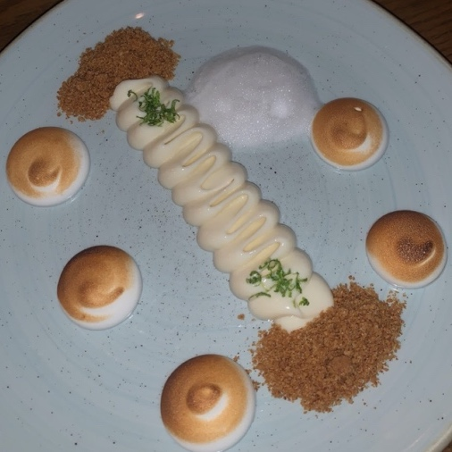

Lady fingers (dependent on layers wanted and size of pan used)
Cocoa powder
Instructions:
Take the sugar and egg yolks and whisk it and temper over a double boiler
Once its tempered and cool, in a separate pot whisk the mascarpone and the cream. Combine the two pots
Combine coffee and coffee liquor
Dip the lady fingers into the coffee for 5 seconds
Begin layering starting with lady fingers then a layer of the mascarpone mixture altering until the pan is filled.
Put in the fridge for 30 minutes
Take out from fridge, top with coco powder, and enjoy!
Key Lime Pie

Ingredients:
3 large egg yolks
2/3 cups of key lime juice
Sweetened condensed milk
1 teaspoon lime zest
Graham crackers
1 tablespoon of unsalted butter
1 teaspoon of dark brown sugar
Instructions:
In a medium bowl, combine the egg yolks until pale and thickened. Then add the lime juice and condensed milk and lime zest. Beat until you have a thick creamy consistent.
For the crust, take a zip-locked bag and add the graham crackers and brown sugar. Smash it until its fine.
Beat the remainder of the eggs until white and foamy. Slowly add the sugar and whip eggs until they are stiff. You can torch the top
Time to assemble! First add the filling to the middle of the plate. Add the graham cracker mixture to the ends of the plate. Lastly add the meringue to around the plate. Garnish with lime zest.